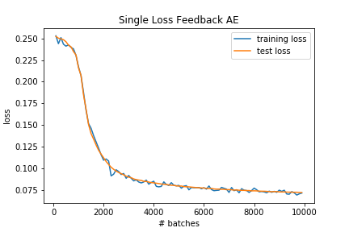

Autoencoder with feedback controlled ReLu slope on MNIST
Setup
The architecture consists of an input layer, followed by two encoding layers, followed by two decoding layers.
The input has dimension (1x784), the first encoding layer (E1) outputs data of dimension (1x392), the second (E2) of dimension (1x196), the first decoding layer (D1)
of dimension (1x392) and the second decoding layer (D2) restores the data back to its original dimension.
Since we have a feedback connection going from D1 to E1, we need to unroll the network such that the input data is passed through the network twice and the feedback
connection is only active on the second pass:
(here the left and right "columns" correspond to the first and second timestep, respectively)
The weights in the network remain the same regardless of the current timestep.
The feedback connection is different from the other connections in that it does not contribute to the input of the encoding layer directly, but changes the slope of
its ReLu activation function, as described here.
The modified ReLu takes the form:
$$f(\mu_S, \mu_D) = \frac{max(0, \mu_S)}{1 - min(\frac{\beta_{max}}{\eta} \ \mu_D, \beta_{max})}$$
with parameters chosen as \(\eta=20\) and \(\beta_{max}=\frac{2}{3}\).
Three models were trained and compared:
Single Loss Feedback AE (SLFAE): the above described model with a log loss function that takes the output of D2 at timestep t=2 as an input
Dual Loss Feedback AE (DLFAE): the above described model with a loss function comprised of a weighted sum of log loss functions that take the output of D2 at timestep t=2 and t=1:
$$loss = log\_loss(D2_{t=2}) + 0.9 \ log\_loss(D2_{t=1})$$
Standard AE: a standard autoencoder consisting only of the left column of the above figure (and hence
with a log loss function taking the output of D2 at timestep t=1 as an input).
Results
The figures below depict the convergence behaviour as loss over time, evaluated on both training and test set, for all three models:

Clearly, the convergence behaviour does not differ much across models. Note that the loss values are higher in the second figure due to the
weighted sum loss function.
For a more direct comparison between the models, the loss curves are superimposed in the following:
Note that the loss values for the DLFAE are divided by \(1.9\) to account for the overall higher loss caused by the employed loss function.
Even after this adjustment, the DLFAE's performance is slightly worse than that of the other two models (which in turn appear almost identical to each other).
Some examples of images reconstructed by the different models, at different stages of training, are shown below. For the feedback autoencoders, reconstructed images are provided for the first pass (i.e. t=1),
second pass (i.e. t=2), as well as the absolute difference between the two.